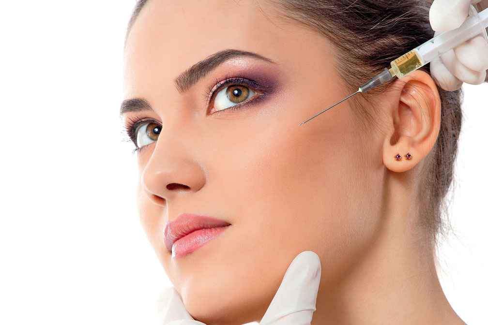

Плазмофилинг
 Плазмофилинг – уникальная процедура, основанная на применении особым образом собственной плазмы пациента, которая приобретает свойства полноценного филлера. Плазмогель применяется для коррекции морщин, складок, уменьшения рубцов пост акне, уплотнения кожи- наиболее безопасным способом. Благодаря своему естественному происхождению Плазмогель абсолютно безопасен, не вызывает аллергических реакций и побочных эффектов.
- Время процедуры: 60 минут
- Анестезия по желанию
- Моментальный видимый эффект
- Накопительный эффект
- Процедура безопасна и натуральна
- Стоимость 8 000 руб.
Показания
- возрастные изменения кожи (морщины, складки, заломы);
- дряблость кожи;
- потеря объема тканей;
- рубцы постакне;
- птоз и изменение овала лица.
Для получения желаемого результата от процедуры важно соблюдать рекомендации, выбирать качественные пробирки и опытных специалистов. Врачи «L.R. CLINIC» проводят не менее 7000 инъекционных процедур в год. Профессионализм наших докторов гарантируют пациенту наилучший результат от процедуры.
Гарантия качества «L.R. CLINIC» – работа только с оригинальными сертифицированными пробирками Plasmolifting TM. В июле 2019 года «L.R. CLINIC» была внесена в Реестр патентных лицензий на проведение процедур по технологии Плазмолифтинг®.
Результаты
- Заполнение и разглаживание морщин (носогубные, губоподбородочные складки, кисетные морщины, морщины вокруг глаз).
- Восстановление утраченного объема тканей.
- Выравнивание рельефа кожи при наличии постакне.
- Профилактика образования морщин за счет формирования "каркаса" из новой соединительной ткани.
- Стимуляция обновления и улучшения кожи.
- Усиление эффекта других омолаживающих процедур.
Преимущества
- Эффективно. Немедленный результат.
- Выбор плотности геля в зависимости от индивидуальных особенностей пациента
- Плазмогель стимулирует уплотнение соединительной ткани, за счет чего происходит не только заполнение морщин, но и их предотвращение, а также пролонгирование полученного результата.
- Безопасно. Плазмогель полностью натурален, не вызывает аллергических реакций, побочных эффектов, не содержит вредных для организма веществ.
Процедура
Аутологичный гель получают из плазмы, которая выделяется из крови с помощью оригинальных сертифицированных пробирок PlasmoliftingTM. Плазму подвергают термической обработке в термостате, в результате чего она становится густой и приобретает форму геля, который затем инъекционно вводят в области, требующие коррекции. Заполняя морщины и заломы, гель распределяется равномерно, поэтому видимых следов коррекции не остается. Он активирует клетки соединительной ткани, формируя "каркас" лица, и стимулирует регенерацию тканей, обеспечивая продолжительность полученного эффекта.
Рекомендации до и после процедуры
До процедуры
За 3 дня про процедуры прекратить прием препаратов, которые снижают свертываемость крови.
За день до проведения плазмофилинга лица нужно исключить из рациона жирную и жареную пищу, продукты, содержащие консерванты, алкоголь и кофе.
За 3 – 4 часа до процедуры не рекомендуется есть. Количество выпиваемой жидкости увеличить.
Процедуру лучше всего проводить в первой половине дня.
После процедуры
После процедуры рекомендуется в течение 1-2 недель исключить посещение бани, сауны, солярия, а также избегать инсоляции и физические нагрузки.
Противопоказания
- Злокачественные новообразования
- Системные заболевания крови
- Психические заболевания
- Аллергическая реакция на антикоагулянт (гепарин натрия) в анамнезе
Сочетание плазмолифтинга c процедурами
Перед плазмофилингом рекомендован предварительный курс плазмолифтинга, что позволяет пролонгировать результат плазмофилинга и добиваться эффекта «стереоомоложения» за счет проработки всех слоев мягких тканей.
Процедура плазмофилинга часто проводится и в сочетании с армированием мезонитями. Лифтинг-эффект, достигаемый за счет объединения этих процедур, превосходит в разы эффект от других процедур. Плазмогель применяется для заполнения складок, армирования, а при помощи нитей формируется коллагеновый каркас лица, таким образом обеспечивая подтяжку его овала. Кроме того гель, полученный из плазмы, ускоряет процессы заживления и восстановления кожи, благодаря чему период реабилитации после обеих процедур занимает не более 5 дней.
Квалифицированные специалисты L.R.Clinic вернут вашему лицу молодость и красоту.